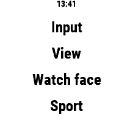
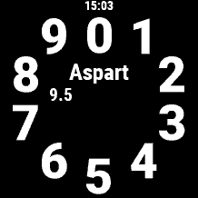
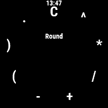
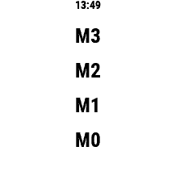
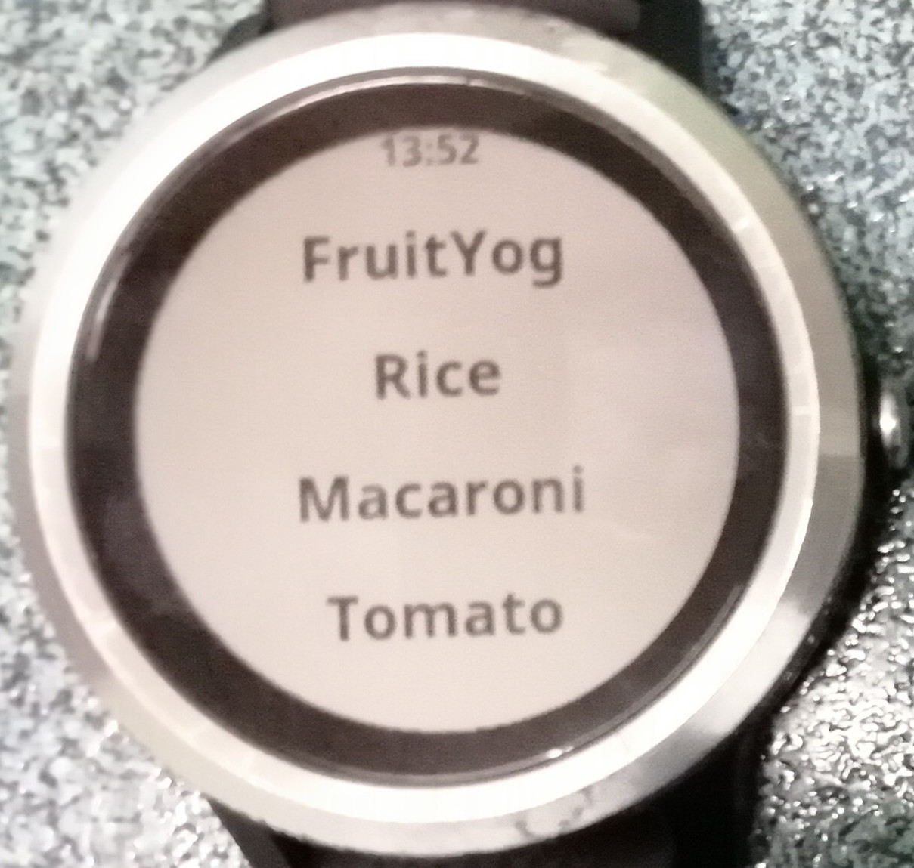
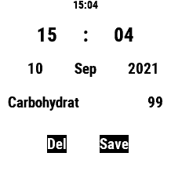
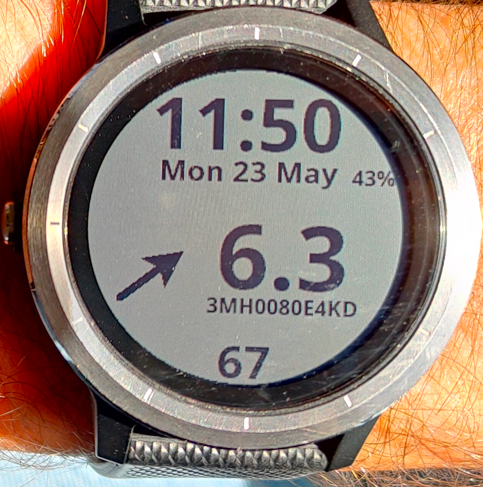
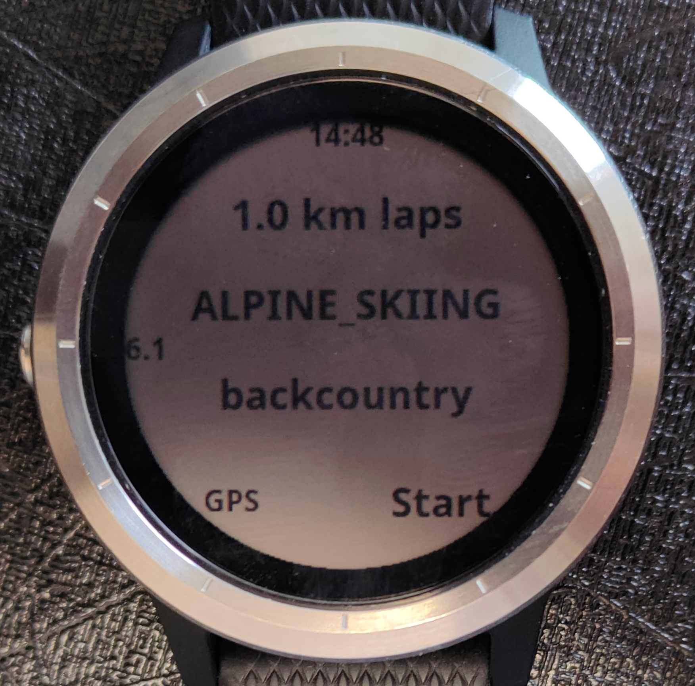

Kerfstok
Kerfstok is a Garmin watch app to enter and display numbers, display the glucose level received from FreeStyle Libre 2 sensors and record activities and show activity metrics on its display. This can all be used by a diabetic patient (or an endurance sport athlete wanting to detect periods of hypoglycemia.)
After starting Kerfstok, you see the following chooses: input, view, Watch face, Sport. By pressing on Input, you can add numbers, View to view them, Watch face brings you to a screen showing beside the time, date, battery level and heart rate, also your current glucose level measured by the Freestyle libre 2 sensor and send via Low energy bluetooth to Juggluco and sent again via low energy Bluetooth to your Garmin watch. You can go back to the main menu, by using the back movement. On my Vivoactive 3, that is swiping to the right.
In Juggluco you can specify labels to be used for numbers entered and displayed in Kerfstok. Possible labels are kinds of Insulin like NovoRapid, Levemir, food consumed like Carbohydrate. The number entered can mean an amount of the label and is associated with a certain time. For example: 23 May 2022 13:33 Dextro 15. In Kerfstok these numbers can be viewed in a list sorted on time. There you can also specify shortcuts to easily insert numbers like the fraction carbohydrate of certain foods. These amounts are sent to this android app and displayed there. Amounts can also be given in Juggluco which will be sent back to this watch app. If you touch Input, in the main screen, a list of labels for amount of food or insulin is shown (as you specified under Settings, Number labels in Juggluco).  You can page up and down by swiping up and down. By touching a label you come in a number dial view, in which you can specify a number by touching the individual digits. The created number will be saved by touching the middle of the screen. Swiping upwards brings up a view showing arithmetic operations (+,-,/,*,^) and a point (.). You can insert one of them by touching it. 'C' clears the screen, 'Round' rounds to whole numbers. If you have added arithmetic operators, the result will be calculated by pressing on the created formula in the middle of the screen. Touching a second time, will save the result and leave the screen.
Swiping downwards in the dial view, brings you in a view showing previous values, touching one of them inserts them in the middle of the screen.
Kerfstok also has hand calculator like memory places. Long touching at the left of the middle of the dial, can be used to remember the displayed value, a view of memory places is shown (M0,M1,M2,M3) touching one of them remembers the current display in that location. By Long pressing the right side of the middle of the screen, you can insert the number by pressing one of the shown memory places (e.g. M0).
After swiping to the left of the screen, a list of shortcuts is shown. You can create these shortcuts in Juggluco under Settings, Shortcuts. Pressing one of the shortcuts inserts its value in the middle of the number dial. Shortcuts can be numbers (e.g. bread - 0.45), but also numbers plus arithmetic operators (e.g. bread - *0.45) depending on your soft keyboard.
After pressing the middle of the dial, the number is saved. You can view saved numbers by touching View in the main menu. You can edit one by touching it. Touching the hour, minute, day, month , year, label or amount brings you in a view were you can change it. Afterwards press save. Del deletes the number. Swipe right to leave the screen without saving.
In the list of saved numbers, you can page up and down by swiping down and up. Swiping to the left moved one day back. Swiping to the right brings you to the previous screen.
The android app Juggluco connects with Freestyle libre 2 sensors and receives every minute a glucose value via bluetooth. Juggluco can sent this value to Kerfstok. Kerfstok contains a kind of watch face showing beside the time, date, battery level and heart rate, also the glucose level received from Juggluco.
To be able to show this glucose value all the time and still engage in activities, it is possible to record activities and display the result in Garmin's connect app. Current speed and distance e.g. are displayed in Kerfstok. You can select from all sport and sub-sports available through Garmin's health SDK, but GPS is always turned on, so it is only appropriate for sports containing outdoor movement.
 Sport let you choose out of all kind of activities by touching the currently displayed activity and selecting one activity out of a list of activities. By swiping up and down (on my Vivoactive 3) you can page down and up the list. Touching an activity selects it. Here after you can select a subtype of the activity, by touching the current subtype (e.g. generic). If you selected Cycling, you can select for example mountain, gravel or road. By pressing at the top of the screen you can select the lap size in mile or km, depending on your watch settings. This means that after distances of this size, you watch vibrates. These laps are also shown in Garmin's connect app. If you specify 0, no laps are generated.
The activity is started by touching Start (or on my watch the only button). This let you to the sport view: In the top of the screen the time is shown, there under your current glucose value. In the middle on the right is your current speed; on the right under the middle, the current distance and at the bottom of the screen your heart rate.
Now and then at the left side of the middle, when a lap distance is reach the time used for this distance is shown. You can also manually add a lap, by touching two times, or touching for a long time. Then the time is shown between now and the previous manual lap or the start of the activity.
(Garmin Connect doesn't differentiate between automatic and manual laps.) From the sport view, you can go back to the start view and register a number, without interrupting the recording of the activity. To pause or end the activity I press the button on my watch (on a watch with multiple buttons, you probably have to press one of them).
You can install it from here:
https://apps.garmin.com/en-US/apps/b6348ccc-86d8-4780-8013-d9e19fed5260
The source is available from: https://j-kaltes.github.io/Kerfstok/Kerfstok-source.html